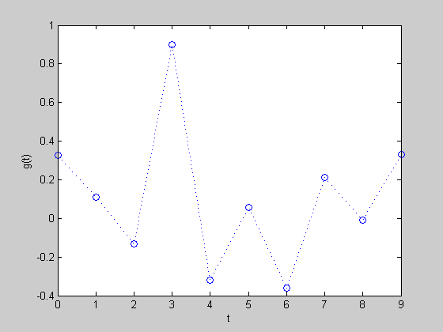
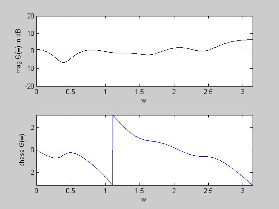
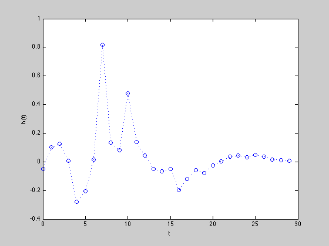
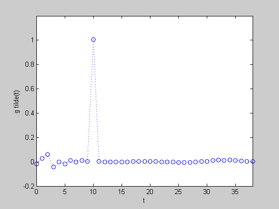
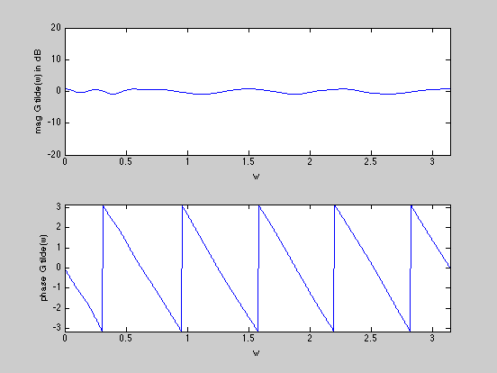
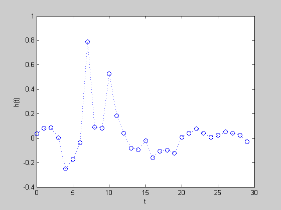
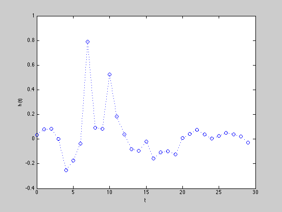
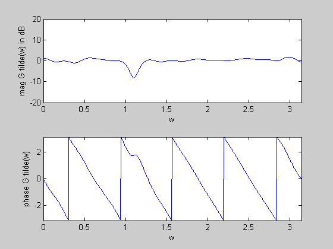

Equalizer design example
g =.5*[ 0.6526; 0.2157; -0.2639; 1.8024; -0.6430; ...
0.1096; -0.7190; 0.4206; -0.0193; 0.6603;];
n = 30;
D = 10;
m = 15*(length(g) + n);
w = linspace(0,pi,m)';
G = exp( -j*kron(w,[0:length(g)-1]) )*g;
A = exp( -j*kron(w,[0:n-1]) );
Gdes = exp(-j*D*w);
cvx_begin
variable hf(n,1)
minimize( max( abs( G.*(A*hf) - Gdes ) ) )
cvx_end
disp(['Frequency equalization problem is ' cvx_status])
if ~strfind(cvx_status,'Solved')
return
end
Tconv = toeplitz([g; zeros(n-1,1)],[g(1) zeros(1,n-1)]);
times_not_D = [1:D D+2:size(Tconv,1)];
cvx_begin
variable t
variable ht(n,1)
minimize( max( abs( Tconv(times_not_D,:)*ht ) ) )
subject to
Tconv(D+1,:)*ht == 1;
cvx_end
if ~strfind(cvx_status,'Solved')
disp(['Frequency equalization problem is ' cvx_status])
return
end
figure(1)
plot([0:length(g)-1],g,'o',[0:length(g)-1],g,'b:')
xlabel('t')
ylabel('g(t)')
figure(2)
H = exp(-j*kron(w,[0:length(g)-1]))*g;
subplot(2,1,1);
plot(w,20*log10(abs(H)))
axis([0,pi,-20,20])
xlabel('w')
ylabel('mag G(w) in dB')
subplot(2,1,2)
plot(w,angle(H))
axis([0,pi,-pi,pi])
xlabel('w')
ylabel('phase G(w)')
figure(3)
plot([0:n-1],hf,'o',[0:n-1],hf,'b:')
xlabel('t')
ylabel('h(t)')
figure(4)
gt=conv(g,hf);
plot([1:length(gt)]-1,gt,'o',[1:length(gt)]-1,gt,'b:')
xlabel('t')
ylabel('g tilde(t)')
axis([0,length(gt)-1,-.2 1.2])
figure(5)
H = exp(-j*kron(w,[0:length(gt)-1]))*gt;
subplot(2,1,1)
plot(w,20*log10(abs(H)))
axis([0,pi,-20,20])
xlabel('w')
ylabel('mag G tilde(w) in dB')
subplot(2,1,2)
plot(w,angle(H))
axis([0,pi,-pi,pi])
xlabel('w')
ylabel('phase G tilde(w)')
figure(6)
plot([0:n-1],ht,'o',[0:n-1],ht,'b:')
xlabel('t')
ylabel('h(t)')
figure(7)
gt=conv(g,ht);
plot([1:length(gt)]-1,gt,'o',[1:length(gt)]-1,gt,'b:')
xlabel('t')
ylabel('g tilde(t)')
figure(8)
H = exp(-j*kron(w,[0:length(gt)-1]))*gt;
subplot(2,1,1)
plot(w,20*log10(abs(H)))
axis([0,pi,-20,20])
xlabel('w')
ylabel('mag G tilde(w) in dB')
subplot(2,1,2)
plot(w,angle(H))
axis([0,pi,-pi,pi])
xlabel('w')
ylabel('phase G tilde(w)')
Calling SDPT3: 1829 variables, 1798 equality constraints
------------------------------------------------------------
num. of constraints = 1798
dim. of socp var = 1799, num. of socp blk = 600
dim. of free var = 30 *** convert ublk to linear blk
number of dense column in A = 61
*******************************************************************
SDPT3: homogeneous self-dual path-following algorithms
*******************************************************************
version predcorr gam expon
NT 1 0.000 1
it pstep dstep p_infeas d_infeas gap mean(obj) cputime
-------------------------------------------------------------------
0 0.000 0.000 1.2e+01 1.3e+01 6.6e+02 5.000000e-01 0:0:00 spchol 1 1
1 0.980 0.980 1.6e+00 1.7e+00 1.1e+02 2.338480e-01 0:0:00 spchol 1 1
2 0.961 0.961 6.2e-02 6.5e-02 5.1e+00 5.643046e-01 0:0:01 spchol 1 1
3 0.577 0.577 2.2e-02 2.3e-02 1.2e+00 2.625035e-01 0:0:01 spchol 1 1
4 0.709 0.709 5.7e-03 6.0e-03 2.3e-01 1.008999e-01 0:0:01 spchol 1 1
5 0.908 0.908 1.1e-03 1.1e-03 5.4e-02 9.748471e-02 0:0:01 spchol 1 1
6 0.940 0.940 2.3e-04 2.4e-04 1.3e-02 9.518215e-02 0:0:01 spchol 1 1
7 0.755 0.755 8.7e-05 9.1e-05 5.2e-03 9.527463e-02 0:0:02 spchol 1 1
8 0.657 0.657 4.4e-05 4.6e-05 2.7e-03 9.576004e-02 0:0:02 spchol 1 1
9 0.850 0.850 1.3e-05 1.3e-05 7.9e-04 9.615722e-02 0:0:02 spchol 1 1
10 0.661 0.661 6.1e-06 6.4e-06 3.9e-04 9.629455e-02 0:0:02 spchol
SWM to ill-conditioned, switch to LU factor. splu 1 1
11 0.814 0.814 1.9e-06 2.0e-06 1.2e-04 9.638211e-02 0:0:03 splu 1 1
12 0.737 0.737 7.9e-07 8.3e-07 5.0e-05 9.640776e-02 0:0:03 splu 1 1
13 0.864 0.864 1.8e-07 1.8e-07 1.1e-05 9.642205e-02 0:0:04 splu 1 1
14 0.946 0.946 2.6e-08 2.8e-08 1.7e-06 9.642561e-02 0:0:04 splu 1 1
15 0.938 0.938 1.3e-08 4.4e-09 2.6e-07 9.642618e-02 0:0:04 splu 1 1
16 0.576 0.576 7.7e-08 2.3e-09 1.4e-07 9.642623e-02 0:0:05 splu 1 1
17 0.579 0.579 8.1e-08 1.2e-09 7.4e-08 9.642625e-02 0:0:05 splu 1 1
18 0.578 0.578 1.9e-07 6.5e-10 3.9e-08 9.642627e-02 0:0:05 splu 1 1
19 0.577 0.577 2.6e-07 3.4e-10 2.1e-08 9.642627e-02 0:0:06 splu 1 1
20 0.576 0.576 5.1e-07 1.8e-10 1.1e-08 9.642628e-02 0:0:06 splu 1 1
21 0.576 0.576 5.6e-07 9.8e-11 5.9e-09 9.642628e-02 0:0:07 splu 1 1
22 0.577 0.577 3.9e-07 5.3e-11 3.2e-09 9.642628e-02 0:0:07 splu 1 1
23 0.575 0.575 2.7e-07 2.8e-11 1.7e-09 9.642628e-02 0:0:07 splu 1 1
24 0.577 0.577 1.5e-07 1.5e-11 8.9e-10 9.642628e-02 0:0:08 splu 1 1
25 0.578 0.578 5.8e-08 8.1e-12 4.7e-10 9.642628e-02 0:0:08 splu 1 1
26 0.578 0.578 3.9e-08 4.3e-12 2.5e-10 9.642628e-02 0:0:08 splu 1 1
Stop: primal infeas has deteriorated too much, 1.5e-06
27 0.579 0.579 3.9e-08 4.3e-12 2.5e-10 9.642628e-02 0:0:09
-------------------------------------------------------------------
number of iterations = 27
primal objective value = 9.64262816e-02
dual objective value = 9.64262815e-02
gap := trace(XZ) = 2.50e-10
relative gap = 2.28e-10
actual relative gap = 1.22e-10
rel. primal infeas = 3.89e-08
rel. dual infeas = 4.29e-12
norm(X), norm(y), norm(Z) = 3.4e+00, 3.6e-01, 3.6e-01
norm(A), norm(b), norm(C) = 2.3e+02, 2.4e+01, 1.0e+00
Total CPU time (secs) = 8.7
CPU time per iteration = 0.3
termination code = -7
DIMACS: 3.9e-08 0.0e+00 4.3e-12 0.0e+00 1.2e-10 2.1e-10
-------------------------------------------------------------------
------------------------------------------------------------
Status: Inaccurate/Solved
Optimal value (cvx_optval): +0.0964263
Frequency equalization problem is Inaccurate/Solved
Calling SDPT3: 104 variables, 74 equality constraints
------------------------------------------------------------
num. of constraints = 74
dim. of socp var = 76, num. of socp blk = 38
dim. of free var = 28 *** convert ublk to linear blk
*******************************************************************
SDPT3: homogeneous self-dual path-following algorithms
*******************************************************************
version predcorr gam expon
NT 1 0.000 1
it pstep dstep p_infeas d_infeas gap mean(obj) cputime
-------------------------------------------------------------------
0 0.000 0.000 5.0e-01 4.8e+00 9.4e+01 5.000000e-01 0:0:00 chol 1 1
1 1.000 1.000 1.1e-01 1.1e+00 3.0e+01 5.715233e-01 0:0:00 chol 1 1
2 0.878 0.878 1.3e-02 1.3e-01 3.6e+00 4.606422e-01 0:0:00 chol 1 1
3 0.772 0.772 2.7e-03 2.6e-02 5.6e-01 1.155148e-01 0:0:00 chol 1 1
4 0.793 0.793 5.9e-04 5.7e-03 1.1e-01 2.828573e-02 0:0:00 chol 1 1
5 0.524 0.524 4.3e-04 4.1e-03 1.0e-01 3.646963e-02 0:0:00 chol 1 1
6 1.000 1.000 9.2e-05 8.8e-04 3.0e-02 3.114265e-02 0:0:00 chol 1 1
7 0.825 0.825 2.5e-05 2.4e-04 8.2e-03 3.178189e-02 0:0:00 chol 1 1
8 0.941 0.941 4.1e-06 3.9e-05 1.3e-03 3.160785e-02 0:0:00 chol 1 1
9 0.881 0.881 1.5e-06 1.5e-05 5.3e-04 3.159840e-02 0:0:00 chol 1 1
10 0.887 0.887 2.4e-07 2.3e-06 8.2e-05 3.162345e-02 0:0:00 chol 1 1
11 1.000 1.000 7.5e-08 7.2e-07 2.8e-05 3.162349e-02 0:0:00 chol 1 1
12 1.000 1.000 4.5e-09 4.3e-08 1.5e-06 3.162498e-02 0:0:00 chol
SWM to ill-conditioned, switch to LU factor. lu 1 1
13 1.000 1.000 1.7e-09 1.1e-08 4.1e-07 3.162503e-02 0:0:00 lu 1 1
14 1.000 1.000 1.4e-09 3.7e-10 1.3e-08 3.162505e-02 0:0:00
Stop: max(relative gap, infeasibilities) < 1.49e-08
-------------------------------------------------------------------
number of iterations = 14
primal objective value = 3.16250499e-02
dual objective value = 3.16250457e-02
gap := trace(XZ) = 1.30e-08
relative gap = 1.26e-08
actual relative gap = 3.93e-09
rel. primal infeas = 1.36e-09
rel. dual infeas = 3.74e-10
norm(X), norm(y), norm(Z) = 1.1e+00, 7.7e-01, 7.7e-01
norm(A), norm(b), norm(C) = 1.7e+01, 1.0e+00, 1.0e+00
Total CPU time (secs) = 0.3
CPU time per iteration = 0.0
termination code = 0
DIMACS: 1.4e-09 0.0e+00 3.7e-10 0.0e+00 3.9e-09 1.2e-08
-------------------------------------------------------------------
------------------------------------------------------------
Status: Solved
Optimal value (cvx_optval): +0.031625
       